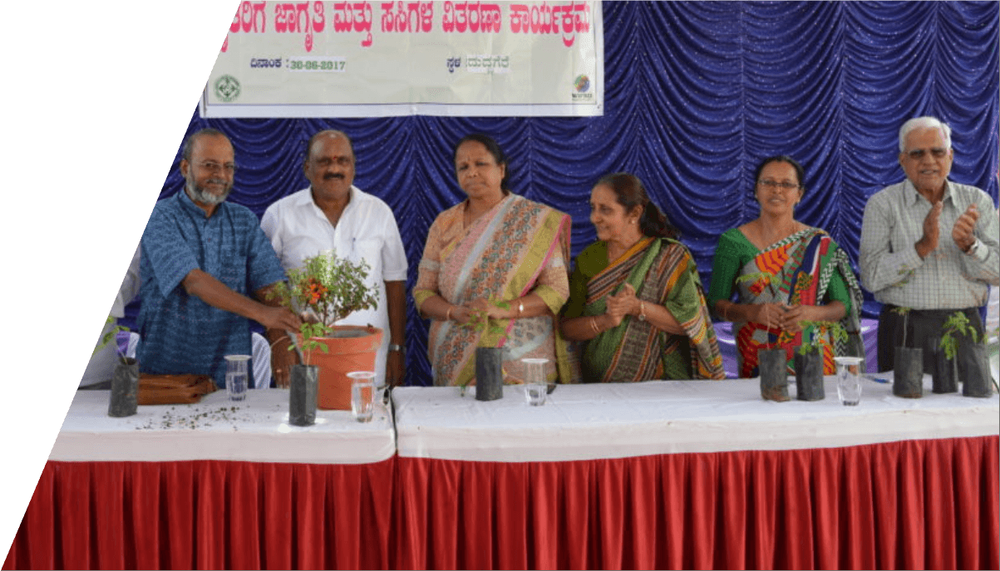

People Development
This programme aims at sustainability in community development where participation of the people is crucial. RLHP facilitates various CBOs like MSDF, VHSC, BRSSS and SDMC and motivates them to collectively stand for their basic rights and have strength for lobbying with the government for accessing basic facilities. Huge strides in slum development, basic facilities like health, livelihood and social protection for the underprivileged have been achieved so far.
Power of awareness which paved a way for livelihood opportunities
